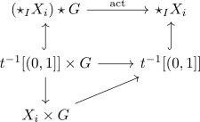

algebraic topology 3 - Principal G-Bundles and fiber bundles
Aspects
4.1)
4.2)
- principal g-bundle as quotient map
- principal g-bundle as fibre bundle
- principal g-bundle as serre fibration
- numerable principal g-bundle as hurewicz fibration
- numerable principal g-bundle
- Existenz einer untergeordneten Partition der Eins für einen parakompakten Raum
4.3)
- associated cocycles
- correspondence between associated cocycles and principal g-bundles - todo
- fiber of a principal g-bundle as g-torsor
- principal g-action as free action
4.4) todo
4.5)
- principal g-action as covering like action for a discrete group
- principal g-bundle for a discrete group as galois covering
4.6)
4.7)
- sphere as C2 bundle of the real projective space
- sphere as S1 bundle of complex projective space
- sphere as S3 bundle of quaternionic projective space
4.8)
4.9)
4.10)
4.11)
4.12)
4.13)
4.14)
- weakly proper action and section
- weakly proper action and principal action
- weakly proper action and restriction to an open subset
4.15)
- lie group
- general linear group as lie group
- special linear group as lie group
- product of group objects as group object
- orthogonal group as lie group
- special orthogonal group as lie group
- closed-subgroup theorem
- lie group modulo closed subgroup as smooth manifold
- coprojection of lie group modulo closed subgroup as submersion
- subgroup of a topological group acts weakly proper - todo
- principal action of a closed subgroup of a lie group as principal action
4.16)
4.17)
4.18)
- for numerable principal g-bundle
- numerable principal g-bundle
- numerable principal g-bundle functor
- pullback of a numerable principal g-bundle
- subordinate partition of unity
- homotopy theorem of numerable principal g-bundles
- classification theorem of numerable principal g-bundles
4.19)
- classifying space of a group
- classifying space of a topological group
- classifying space and characteristic class ???
4.20)
- associated bundle
- correspondence between isomorphism classes of fibre bundles and principal Aut bundles
4.21)
- associated bundle of a morphism of topological groups
- associated bundle of a continuous group homomorphism as principal bundle
- morphism of topological groups induces a natural transformation on principal g-bundles
- structure group of a fibre bundle
4.22)
- topological vector bundle
- bundle of frames
- associated principal GL_n bundle to a vector bundle
- vector bundle as principal GL_n Bundle
- equipping a vector bundle with a riemannian metric/ he5mitian metric <~> equivalent to reducing to structure $O(n)$ resp. $U(n)$
- direct sum of vector bundles
4.23)
- classification of fibre bundles by prnicipal g-bundles
- fibre bundle over a contractible space as trivial bundle
4.24)
4.25)
4.26)
4.27)
4.28)
4.29)
4.30)
4.31)
4.32)
- associated bundle of a continuous group homomorphism as principal bundle
- morphism of topological groups induces a natural transformation on principal g-bundles
- morphism of topological groups induces morphism on classifying space
- classifying space functor
4.33)
- subgroup quotient as principal g-bundle and quotient
- homotopy fibration of a principal G-action of a subgroup
- quotient of topological groups as fibre of classifying spaces
Let $\iota: H \hookrightarrow G$ be an inclusion of topological groups and
\begin{align*}
G \rightarrow G/H
\end{align*}
the quotient.
Then this
4.34)
4.35)
- presentation complex
- presentation complex induces group isomorphism with fundamental group
- maps up to homotopy between classifying spaces of discrete groups_
- unpointed maps up to homotopy between classifying spaces of discrete groups
- puppe sequence
4.36)
4.37)
4.38)
4.39)
4.40)
4.41)
4.43)
4.46)
Let $G$ be a topological group, $X_i$ a family of topological spaces with a right topological group action
Then this induces a right \(G\)-action on the
\begin{align*}
(t_i \cdot x_i) = (t_i x_i \cdot g)
\end{align*}
Proof
welldefined
follows as it does not change $t_i$ and thus also $\sum t_i$.
continuous
\begin{displaymath}
\begin{tikzcd}
\star_I X_i \times G \rar \dar & \star_I X_i \dar \\
\star_I X_i \rar & [0,1]
\end{tikzcd}
\end{displaymath}is
Furthermore

4.48)
4.49)
4.50)
- small topological category
- functor of small topological categories
- nerve of a topological category
- functor of small topological categories ??
4.51)
4.52)
4.53)
4.54)
4.55)
4.56)
- homotopy type
- weak homotopy type
- homotopy orbit unique up to homotopy equivalence
- fibration sequence of the homotopy orbits